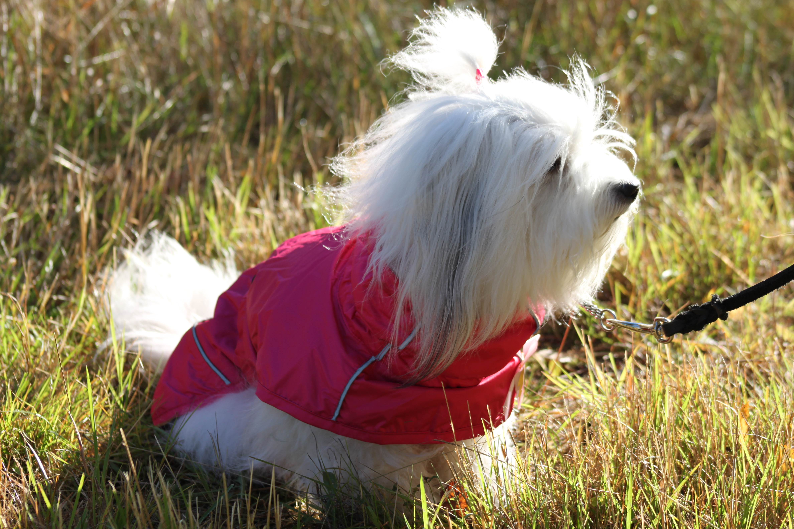
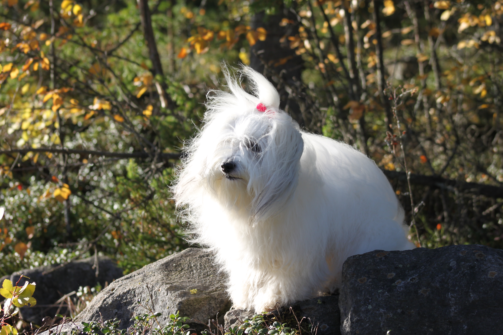
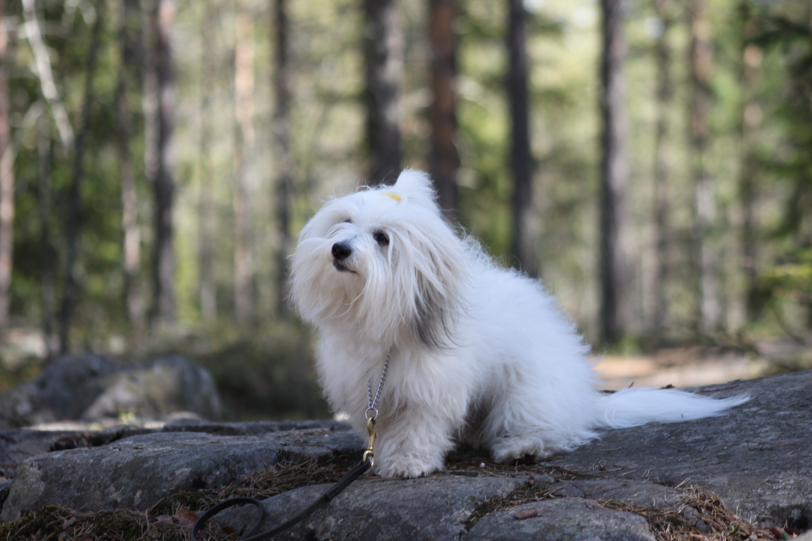
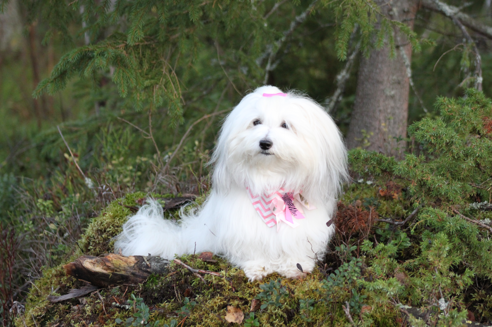

Milan uusi takki

Mila sai uuden vaaleanpunaisen takin. Takki pääsi heti ensimmäiselle ulkoilulle ja Mila näytti viihtyvän siinä hyvin.
Nyt syksyn viileämmillä keleillä säänkestävätakki tulee varmasti tarpeeseen.
Tervetuloa seuraamaan Milan arkea ja kuulumisia. Tänne kirjoitan pieniä juttuja Milan arkipäivistä, retkistä ja muista mielenkiintoisista asioista, joita koirani kanssa koemme.

Mila sai uuden vaaleanpunaisen takin. Takki pääsi heti ensimmäiselle ulkoilulle ja Mila näytti viihtyvän siinä hyvin.
Nyt syksyn viileämmillä keleillä säänkestävätakki tulee varmasti tarpeeseen.

Tänään kävimme Milan kanssa metsälenkillä. Mila sai tutkia rauhassa ympäristöä ja haistella kaikkia mielenkiintoisia hajuja.
Metsässä riittää aina tutkittavaa, joten lenkillä vierähtää helposti pidempäänkin.

Tänään oli mukava syksyinen päivä. Mila pääsi ulkoilemaan ja viettämään aikaa tutussa ympäristössä.
Syksyllä luonnossa on paljon uusia tuoksuja ja tutkittavaa.

Tänään kävimme ottamassa valokuvia metsässä.
Kuvia otettiin myös huivi kaulassa.